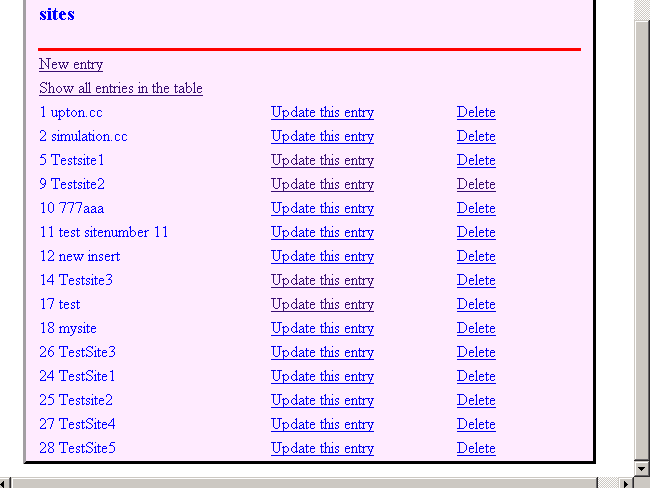
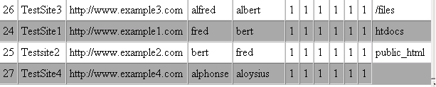
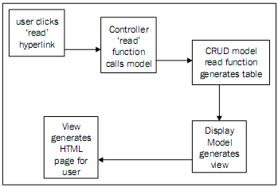
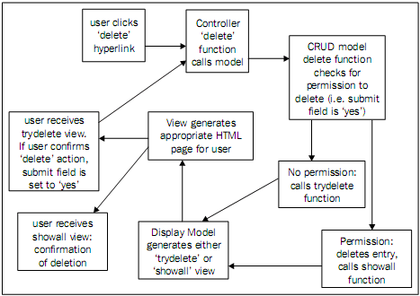
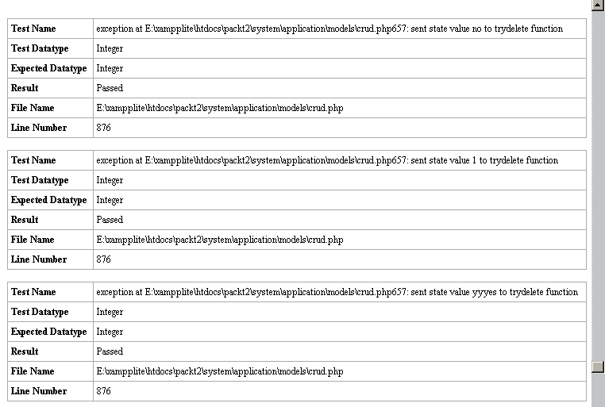
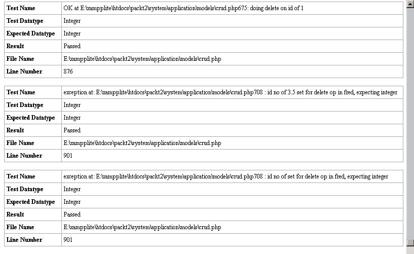

第十三章 快捷的 CRUD 及其配合使用
编写任何一个动态网页时，最基本的，也是最令人厌烦的部分是 CRUD。你有一个或多个数据表时，你需要去对它们每一个实体进行建立、读取、更新与删除。后来，你将对数据处理会变得灵活，但在此之前也有一些界面友好的方式来处理它，并保留下来，但对你的网站是不能用的。
不过，这牵涉到写各种各样的 CRUD 函数，虽然在理念上相当容易，但这些是相当复杂且费时的工作。所以对于我们的网站，我写了一个通用的 CRUD 模型，使用 CI 的类及辅助函数，使之更加容易。在这一章中，你会看到这个模型如何工作，如何将它集成到我们的应用程序中来。
CRUD 模型不只是 CRUD。它验证用户输入的数据，并用多种方式检查它。如：当你在特定行做“delete”操作时，或者通过返回进入到表单并且在你的浏览器中重新加载它，你不小心重复“create”操作时。
最后，CRUD 模型包含了它自己的自检框架，因此你能够把它作为你的架构或适应你的代码，进行开发测试。
CRUD 除此之外，还能做更全面，更优秀的代码（参见第十五章）。然而，我们所要做的是对我们以前所学的课程进行一个好的总结与提高。
本章对模型所要展示的代码包括如下内容：
- 设计原理。
- 一个标准的控制器与模型配合使用。
- 数据库表必须是有条理的。
- 模型本身：保存数据库信息的数组、分离函数。
- 自检函数。
13.1 CRUD 模型：设计原理
在这个 CRUD 模型背后的想法是它能被任何表的任何控制器所调用。对于数据表的数据，在一个数组中，如何从过去显示的数据去更新它，所有都是标准：控制器恰好识别它自己（并且在表中起作用）并且需要对每条记录给一个 ID 号。因此我们不得不写一些简单的控制器，连接到数据库去取数据，并展现它到表单中去。
记得我们不能直接使用一个模型，因此每次我们不得不需要通过一个控制器不使用它。你可以放一些代码到控制器中，但你不得不复制它到其它新的控制器中去。有一种方法，只通过在模型中的一套 CRUD 代码，我们就能去更新，去维护了。代价是你必须去保持控制器与模型之间来去通畅，如何使代码更简洁，更多的困难在后面。
为了简单，我们使用在代码中没有定义的两个扩展函数：
- failure()，当报告有错误时，我们仍然想继续执行。
- 被调用的模型显示－建立菜单与设置基准 URL 等。因而 CRUD 函数建立了一大堆数据，放在 $data 变量中，可以简单的调用：
PHP 代码
$this->display->mainpage($data);

我想让 CRUD 模型能够自检，因此它包含了一个自检组件。如果我们愿意的话，可以在设计处理期间允许我们去调用它。(编写测试套件会让你发现很多错误，起初不经意的地方会出现错误让你很是意外，但是现在发现错误，总比以后你的客户访问网站发现错误要好。)
请以一个折衷的方法记住每一个模型。你要求它的越多，它要求你的也越多。例如，除非你的数据库表以某种特殊方式下，这个模型它不工作。它以完全的高级方式显示在表格中，但它不能灵活处理。它没有使用 Javascript 来更好的适应用户的习惯。它不能用它自己的规则来处理异常。在其它方面，如果你只想实现一系列标准事件（它是很通用的），它是很简单达到的。
13.2 标准的控制器格式
首先，对每一个数据表，你需要有一个标准的控制器。它是怎样让用户与你的数据表接口，如：新增记录，更新记录等。对于新增一个新的人员，用户将与人员数据表对接，因此需要一个不同的控制器：但它与其它的控制器大多是相同的。
下面是我们一个 Sites 数据表的控制器：
<?php class Sites extends Controller { /*the filename, class name, constructor function names and this variable are the only thing you need to change: to the name of the table/controller (First letter in upper case for the Class name and constructor function, lower case for the file and variable.lower case!)*/ var $controller = 'sites'; /*constructor function*/ function Sites() { parent::Controller(); $this->load->model('crud'); } /*function to update an entry (if an ID is sent) or to insert a new one. Also includes validation, courtesy of CI */ function insert($id) { $this->crud->insert($this->controller, $id); } /*interim function to pass post data from an update or insert through to Crud model, which can't receive it directly*/ function interim() { $this->crud->insert2($this->controller, $_POST); } /*function to delete an entry, needs table name and id. If called directly, needs parameters passed to function; if not, from Post array*/ function delete($idno=0, $state='no') { if(isset($_POST['id'])&& $_POST['id'] > 0) {$idno = $_POST['id'];} if(isset($_POST['submit'])) {$state = $_POST['submit'];} $this->crud->delete($this->controller, $idno, $state); } /*function to show all entries for a table*/ function showall() { $this->crud->showall($this->controller, $message); } /*function to show all data in a table, but doesn't allow any alterations*/ function read() { $this->crud->read($this->controller); } /*function to set off the test suite on the 'crud' model. This function need only appear in one controller, as these tests are made on a temporary test table so that your real data is not affected*/ function test() { $this->crud->test(); } } ?>
你领会之后，你会发现它是优美苗条并且十分通用的。如果你想让 people 控制器去代替 Sites 控制器--换句话说，允许你在 people 表中去建立，读取，更新或删除记录，等等，你需要做如下事情：
- 更改 Sites 为 People (首字母大写!)。
- 更改 $controller 变量 sites 为 people (小写)。
- 更改构造函数名Sites 为 People (首字母大写)。
- 保存新的控制器为：system/application/controllers/people.php.
控制器名必须严格的与数据表名一样，如对于 people 表，它必须是 people。在类定义行与构造函数中，名字的首字母必须是大写，但是其他地方不一定要这样。
13.3 数据库表
对于你的数据表有三个简单的规则：
- 最主要是第个表有 ID 字段为主键并且为自增字段 (这是一个标准的 MySQL 字段类型。新增记录时，自动建立一个新的不重复的数字)。
- 如果你想使用它在一个动态的下拉列表，你有一个 NAME 字段。
- 你也必须有一个 SUBMIT 字段来存储状态，和类似的东西等等。
除此之外，你可拥有任何你想要的字段，并随意对其命名，其他所有都由 CRUD 模块处理，适用于设计针对与这些行一起配合成对的任何控制器/数据表。
13.4 模型的心脏：数组
准备工作完成后。让我们开始创建 CRUD 模型吧。
首先你需要定义 CRUD 模型与一个构造函数。标准写法如下：
<?php class Crud extends Model { /*create the array to pass to the views*/ var $data = array(); var $form = array(); var $controller; function Crud() { // Call the Model constructor parent::Model(); $this->load->helper('form'); $this->load->helper('url'); $this->load->library('errors'); $this->load->library('validation'); $this->load->database(); $this->load->model('display');
保存它到 system/application/models/crud.php。
继续钻研，但你仅需要做一次下面的事。你要写一个多维数组（我刚开始的时候从一本书上学的PHP�D�D它是非常好的�D�D上面说“多维数组不会经常遇到，因此我们以后都没有必要深入的学习它”。看来现在开始就要用它了）。
我们数组的一维是数据表列表（sites,pepple,等）。
二维是每个表的字段列表。对于 sites 表，就是 id, name, url 等。
三维是描述每个字段与提供将在插入/更新表单中处理控制的一组变量。如下：
- 在输入框显示你想希望被用户看的文本: 这个字段是如何向人们描述的.(所以它的第一个字段是网站 ID 而不仅仅是 ID). 这个会让你的表单更加用户友好。
- 你可以在你的插入/更新表单上显示表单类型的字段: 这可以是一个输入框、一个文本域或者一个下拉框。(CRUD 模型定制了一些设置但不是全部。)
- 当用户填写表单的时候，你可以加入 CI 的验证规则。这个可以留空。
- 如果你希望动态下拉框显示这个字段, 它的表名将会显示出来.看下面的这个解释,它也同样可以留空。
我们已经声明了类里面的一个变量 $form 为数组，所以以后任何时候，我们必须这样用它 $this->form。它被定义在构造函数里, 它直接跟随前面的代码。
$this->form = array ('sites' => array ( 'id' => array('ID number of this site', 'readonly', 'numeric'), 'name' => array('Name of site', 'textarea', 'alpha_numeric'), 'url' => array('Qualified URL, eg http://www.example.com', 'input', ''), 'un' => array('username to log in to site', 'input', 'numeric|xss_clean'), 'pw' => array('password for site', 'input', 'xss_clean'), 'client1' => array('Main client', 'dropdown', '', 'people' ), 'client2' => array('Second client', 'dropdown', '', 'people'), 'admin1' => array('First admin', 'dropdown', '', 'people'), 'admin2' => array( 'Second Admin', 'dropdown', '', 'people'), 'domainid' => array('Domain name', 'dropdown', 'numeric', 'domains'), 'hostid' => array( 'Host', 'dropdown', 'numeric', 'hosts'), 'submit' => array( 'Enter details', 'submit', 'mumeric') ), 'domains' => array ( 'id' => array('ID number of this domain', 'hidden', 'numeric'), //etc etc etc!!
你会发现 $from 数组里每一个表(这里指站点和域名，虽然由于空间的原因我只开通了后者)都有一个二级数组，每个二级数组都包含了他们自有的三级数组，每一个字段（“id”、“name”等等）对应一个。每个三级数组都是依次排列在数组中，包含了三个或者四个在前面描述的值。
你并不能很容易的理解这种数组，但是从概念上看很简单。
为完成我们应用程序中的表的设置，创建该数组约需 120 行。但是，你只需要去做一次！这是你的模型的心脏。用括号'}'关闭这个构造函数，并继续创建 CRUD 模型的其他函数。
如果你需要改变你的数据库表（例如添加一个新的字段），或者你要改变你的验证规则，那么你只需要改变数组里的数值。他们将会自动更改：举例来说，当您下次尝试增加新的条目时，你应该看到在表上反映的变化。
13.5 CRUD 模型
以下各个函数组成了 CRUD 模型：
13.5.1 Showall 函数
这是一个用户最常用的函数。它可以作为一个切入点，对输入所有其他的操作，添加，更新，或删除。它显示你表里已有内容。网站表上的一些测试数据，它看起来是这样的：

如同你看到的，在这个页面中你可以更新或删除整个网站。你可以添加新的内容，或者从表中读取所有数据。
顺便说一句，请大家不要忘记，该模型并不包括任何安全规定。在一个真实的网站中，你也许要微调用户的选项-例如，允许更新而不能删除。你要确保黑客无法通过输入 URL(例如:www.example.com/index.php/sites/delete/18) 访问 CRUD 模型的功能。CI 的基于 URL 的结构使得它比较容易推断出系统如何访问这些命令，所以你可能希望在 CRUD 模型激活以前，确保用户已登录到网站中。
回到 CRUD 机制。记住，用户不能直接调用模型。每一个操作（删除，更新等）都是通过控制器来调用的。控制器用下面这行代码调用 showall 函数：
$this->crud->showall($this->controller);
换句话说，就是用 showall 函数取代网站的 $this->controller，并传递一个参数到 CRUD 函数中，就是要告诉它，它在取代哪个控制器的功能。
我们现在来看看 showall 函数。我们已经把第一个参数传递给它了。我们把 $message 留到后面。集中看标为高亮的行。
/*this function lists all the entries in a database table on one page. Note that every db table must have an 'id' field and a 'name' field to display! This page is a jumping-off point for the other functions - ie to create, read, update or delete an entry. When you've done any of these, you are returned to this page. It has a 'message' parameter, so you can return with a message - either success or failure.*/ function showall($controller='', $message = '', $test ='no') { $result = ''; $mysess = $this->session->userdata('session_id'); $mystat = $this->session->userdata('status'); if(!$this->db->table_exists($controller)) { $place = __FILE__.__LINE__; $outcome = "exception:$place:looking for table $controller: it doesn't exist'"; /*test block: what if there is no controller by that name?*/ if($test =='yes') { return $outcome; } else{ $this->failure($outcome, 'sites'); } } /*end test block*/ $this->db->select('id, name'); $query = $this->db->get($controller); if ($query->num_rows() > 0) { $result .= "<table class='table'>"; $result .= "<tr><td colspan='3'><h3>$controller</h3></td></tr>"; $result .= "<tr><td colspan='3' class='message'>$message</td></tr>"; $result .= "<tr><td colspan='3'>"; $result .= anchor("$controller/insert/0", 'New entry'); $result .= "</td></tr>"; $result .= "<tr><td colspan='3'>"; $result .= anchor("$controller/read", 'Show all entries in the table'); $result .= "</td></tr>"; foreach ($query->result() as $row) { $result .= "<tr><td>"; $result .= $row->id; $result .= " "; $result .= $row->name; $result .= "</td><td>"; $result .= anchor("$controller/insert/$row->id",'Update this entry'); $result .= "</td><td>"; $result .= anchor("$controller/delete/$row->id",'Delete'); $result .= "</td></tr>"; } $result .= "</table>"; $data['text'] = $result; $this->display->mainpage($data, $this->status); } else {$place = __FILE__.__LINE__; $outcome = "exception: $place: no results from table $controller"; /*test block: were there results from this table/ controller?*/ if($test == 'yes') {$place = __FILE__.__LINE__; return $outcome; } /*end test block*/ else{ $message = "No data in the $controller table"; /*note: this specific exception must return to another controller which you know does contain data... otherwise, it causes an infinite loop! */ $this->failure($message, 'sites'); } } }
它列出了一张表，展示了关于每个条目的一些数据（ID 和名称）。你也可以选择更新或删除功能，以更新或删除该条目：这是利用 CI 的 anchor 函数创建超链接，并链接到适当控制器中的适当函数。
这也有一行代码，为你提供了创造一个新站点的机会，再通过超链接连接到控制器的 insert 函数。（注：我将添加新的条目和更新旧的条目都称为 insert 函数，这是因为，模型假设如果插入的是已存在的 ID 号码，它将更新相应的条目，如果没有对应的 ID，它会创建一个新的条目）。
很多代码都采用了异常处理：例如该表不存在，例如查询没有返回信息。异常会传递到 failure 函数中。此外，还有两个测试模块，允许我运行自我测试。
此外，还有一行代码，允许你读取（但不修改）表中的所有数据。让我们先看看最简单的 read 函数。
13.5.1.1 读取数据
我用 CI 的 HTML 表格类（见第十章）和 Active Record 类（见第四章）简单演示了这个功能片段。我想用数据库中的所有数据把页面格式化成 HTML 表格。它不允许有任何的更改：这就是用于'读取'的页面。
首先，控制器中必须有一个函数来调用模型，并告诉该模型要显示哪个控制器/表。read() 是标准控制器中的函数。
在 CRUD 模型中调用下列函数:
/*queries the table to show all data, and formats it as an HTML table.*/ function read($controller) { $this->load->library('table'); $tmpl = array ( 'table_open' => '<table border="1" cellpadding="4" cellspacing="0" width="100%">', 'row_alt_start' => '<tr bgcolor="grey">', ); $this->table->set_template($tmpl); $this->load->database(); $this->load->library('table'); $query = $this->db->get($controller); $result = $this->table->generate($query); $data['text'] = $result; $this->display->mainpage($data); }
高亮显示的两行代码处理所有的数据库查询工作，并格式化结果。
我用 display 类中的 mainpage 函数来格式化该页：这里的 read 函数组织数据并把它变成数组的一部分。
其结果是由 test 文件的所有数据组成的页面：

让我们再次提醒自己控制行为是如何在控制器、CRUD 模型和程序其他部分之间传递的。

13.5.1.2 Delete 和 Trydelete 函数
删除是不可逆的操作! 基于这个原因，我们的 delete 函数将确认两件事：
- 在 “submit”字段中的状态变量已被设置为“yes”：如果不是，传递请求到 trydelete 函数中。即询问用户，她或他是否真的想删除。如果她或他确认，trydelete 函数设置状态变量为“yes”，并发送请求到 delete 函数，然后删除将被执行。
- 执行删除查询以前，它会检查 ID 号是否已设置(否则可能删除所有内容)。然后，它使用 CI 的 Active Record 执行删除，并确定此行已从数据库表中删除。如果此行已删除，则返回到 showall 函数中。你会发现它传回两个参数--控制器名称和一个报告删除已成功执行的消息。(这是 showall 的第二个参数。如果设置它，则会在表格的顶部显示一个红框，以便让用户知道怎么回事。)
首先，这是 delete 函数。你会发现这个代码也因为“test block”代码行而变得复杂了很多。先忽略这些：只看高亮的代码。
/*DELETE FUNCTION: given table name and id number, deletes an entry*/ function delete($controller, $idno, $state='no', $test='no') { /*first check that the 'yes' flag is set. If not, go through the trydelete function to give them a chance to change their minds*/ if(!isset($state) || $state != 'yes') { /*test block: are 'yes' flags recognised?*/ if($test == 'yes') { $place = __FILE__.__LINE__; $outcome = "exception at $place: sent state value $state to trydelete function "; return $outcome; } else /*end test block*/ {$this->trydelete($controller, $idno, 'no');} } else{ /*'yes' flag is set, so now make sure there is an id number*/ if(isset($idno) && $idno > 0 && is_int($idno)) /*test block: with this id no, am I going to do a delete?*/ { if($test == 'yes') { $place = __FILE__.__LINE__; $outcome = "OK at $place: doing delete on id of $idno "; return $outcome; } else{ /*end test block*/ /*if there is an id number, do the delete*/ $this->db->where('id', $idno); $this->db->delete($controller); $changes = $this->db->affected_rows(); } if($changes != 1) { /*test block: did I actually do a delete? */ $place = __FILE__.__LINE__; $outcome = "exception at $place: cdnt do delete op on $controller with id no of $idno"; if($test == 'yes') {return $outcome;} else /*end test block*/ /*if there was no update, report it*/ {$this->failure($outcome);} } else{ /*test block: I did do a delete*/ if($test == 'yes') {return 'OK';} else{ /*end test block: report the delete*/ $this->showall($controller, "Entry no. $idno deleted.");} } } else /*test block: report id number wasn't acceptable'*/ { $place = __FILE__.__LINE__; $outcome = "exception at: $place : id no of $idno set for delete op in $controller, expecting integer"; if($test == 'yes') {return $outcome;} else /*end test block: if I failed, report me*/ {$this->failure($outcome);} } } }
我答应过要解释一下 showall 函数的 $message 参数。你看它在这：如果这个功能执行成功，它将用一个合适的消息调用 showall，并返回该页：
$this->showall($controller, "Entry no. $idno deleted.");}
重要的不仅仅是操作的完成，还要让用户知道操作已完成。
现在，回到防止意外删除的话题。如果没有用 state=yes 参数调用 delete 函数，它将重新分配请求到 trydelete 函数中--“第二次机会”。实际上，只有 trydelete 函数会设置这个参数为 yes，所以，表单删除会一直提示你是否确认删除操作。
让我们看看 trydelete 函数。它创建一个简单的表单，看起来像这样：
单击“yes”重新调用 delete 函数。(注意：表单不能直接返回到 crud/delete，因为表单不能指向一个模型。它已经指向控制器中的 sites/delete 函数，该函数只是简单的将所有参数直接传递给模型中的 crud/delete 函数。)
这个微妙的改变是，如果用户确认删除，trydelete 表单将添加(作为一个隐藏域) submit=yes 参数，该参数将保存在 post 数组中，然后，返回到控制器的 delete 函数。控制器的 delete 函数从 post 数组中取出 submit=yes 参数，并把 state=yes 作为参数来调用 crud/delete 函数，然后 delete 函数转至下一个步骤。
如果用户不想执行删除操作，用户单击 CI anchor 函数创建的超链接，然后被传回 showall 函数――用户最有可能的点击来源。
这里是完成这个功能的代码:
/*TRYDELETE FUNCION: interrupts deletes with an 'are you sure? screen'*/ function trydelete($controller, $idno, $submit = 'no') { if($state == 'yes') {$this->delete($controller, $idno, 'yes');} else{ $result .= "<table><tr><td>Are you sure you want to delete this entry?</td></tr>"; $result .= form_open("$controller/delete"); $result .= form_hidden('id', $idno); $result .= "<tr><td>"; $result .= form_submit('submit', 'yes'); $result .= "</td></tr>"; $result .= form_close(); $result .= "</table>"; $result .= anchor("$controller/showall", "No, don't delete"); $data['text'] = $result; $this->display->mainpage($data); } }
只是为了清楚起见，这里有一张如何在删除操作中传递控制行为的图表。

你可以看到，这比我们先前的例子复杂的多。模型会处理所有的工作,但用户只能调用控制器,所以如果你需要后退并向用户重新显示问题,你需要再次调用控制器。
不过，一旦你整理出来，它运作良好，而且还具有高度的逻辑性。CI 强加这个框架给你，但长远来说，这就是一个优势。你的代码是一致的，模块化的。注意模型和视图每次被调用时的相同处:他们向用户展示什么依赖于调用他们的 CRUD 模型里的函数。
13.5.2 Insert 函数
这是最复杂的函数，因为它生成一个让用户填写的表单。（和人相关的接口总是最复杂的东西……）
与其写两个独立的函数，一个用来插入、一个更新，而且需要建立两次表单，我写一个函数来完成这两个工作。如果你提供了一个合法的 ID 号，就更新相应的记录；如果未提供，则插入一条新记录。
简便起见，我没有加入我们在 delete 函数中的测试模块。
以下就是我们使用本章开头定义的那个数组的地方。这个函数生成了一个表格，通过使用 CI 的表单辅助函数，基于数组中特定的表单元素（下拉，文本域等等。）。函数的核心是一个状态切换来实现如下工作。
这段代码使用 CI 的验证类来帮助我们检查输入的数据：记住我们在初始数组中设置了验证规则。
/*the most complex function. This creates an HTML form, based on the description of the fields in the form array. This is sent to our display model, which sets up a view and shows it to the user. The view then sends a POST array back to the controller. The form can't call this model directly, so it has to call the controller, which refers it back to the model. Note the function parameters: 1. The controller parameter is whichever controller/ table has called the model - eg the 'sites' controller, or the 'domains' controller. The controller has the same name as the table it manipulates. 2. The optional id parameter is the id of an individual entry in that table. 3. The optional 'test' parameter is so you can set the form up to make usable responses to self-test functions. */ function insert($controller='', $id=0, $test='no') { $myform = ''; $myid = 0; $currentvalue = array(); /*test if the table exists*/ if(!$this->db->table_exists($controller)) { $place = __FILE__.__LINE__; $outcome = "exception: $place:looking for table $controller: it doesn't exist'"; if($test =='yes') { return $outcome; } else{ $this->failure($outcome, $controller); } } else { if($test =='yes') { return 'OK'; } } /*end test block*/ /*next check if there is an id number. If there is, we need to get the values to populate the table fields*/ if(isset($id) && $id > 0) {$myid = $id; $this->db->where('id', $id); $query = $this->db->get($controller); if ($query->num_rows() > 0) { $row = $query->row(); //--------------work out the values we want! foreach($row as $key =>$value) /* first of all work out what value you want to show as the existing value in each line of the form. In priority order these are: 1. the last value the user entered, from the post array 2. the value from the database 3. nothing, if neither of these is set. if we got here, the id does exist and is returning values, so get the existing values into a value array. Or, if there is something in the validation array, use that instead*/ { $_POST[$key] = $this->validation->$key; if(isset($_POST[$key])) {$currentvalue[$key] = $_POST[$key];} else {$currentvalue[$key] = $value;} } /*test block: there was an id number, so has the program gone for an update? if this is not a test, of course, just do the update*/ if($test == 'yes') { $place = __FILE__.__LINE__; $outcome = "exception: $place: id of $id returned results from $controller table so have gone for update"; return $outcome; } /*end test block*/ $myform .= "<tr><td colspan='2'>Update existing entry number $id</td></tr>"; } /*now catch situation where this query isn't returning results. We could only have got here with an integer set as our ID number, so this probably means we are trying to delete an entry that doesn't exist.*/ else{ $place = __FILE__.__LINE__; $outcome = "exception: $place: despite id of $id cant get any results from $controller table"; if($test == 'yes') /*test block: there was and ID but there were no results*/ { return $outcome; } /*end test block*/ else {$this->failure($outcome, $controller);} } } /*there was no ID number, so this is a new entry*/ else{ /*If the user has filled in values, and has returned here because some of them didn't validate, we still need to repopulate the form with what he entered, so he only has to alter the one that didn't validate. Get these from the post array*/ if(isset($_POST)) { foreach($_POST as $key => $value) { if(isset($_POST[$key])) {$currentvalue[$key] = $_POST[$key];} } } $myform .= "<tr><td colspan='2'>New entry</td></tr>"; /*test block: there was no ID, so this is a new entry*/ if($test == 'yes') { $place = __FILE__.__LINE__; $outcome = "exception: $place: id of $id treated as no id, so going for new entry"; return $outcome; } /*end test block*/ } /*the table exists, whether this is an update or new entry, so start to build the form*/ $myform .= "<table class='table'>"; $myform .= form_open("$controller/interim"); $myform .= '<p>This entry could not be made because...</p>'; $myform .= $this->validation->error_string; /*the rest of this function is common to inserts or update. Look up in the form array which form field type you want to display, and then build up the html for each different type, as well as inserting the values you want it to echo.*/ foreach($this->form[$controller] as $key => $value) { /*This switch statement develops several types of HTML form field based on information in the form array. It doesn't yet cover checkboxes or radio or password fields. It adds a 'readonly' type, which is a field that only displays a value and doesn't let the user modify it*/ $fieldtype = $value[1]; $val_string = $this->validation->$key; switch($value[1]) { /*a simple input line*/ case 'input': $data = array( 'name' => $key, 'id' => $key, 'value' => $currentvalue[$key], 'maxlength' => '100', 'size' => '50', 'style' => 'width:50%', ); $myform .= "<tr><td>$value[0]</td><td>"; $myform .= form_input($data); $myform .= "</td></tr>"; if($test == 'second') { return 'input'; } break; case 'textarea': /*a text area field.*/ $data = array( 'name' => $key, 'id' => $key, 'value' => $currentvalue[$key], 'rows' => '6', 'cols' => '70', 'style' => 'width:50%', ); $myform .= "<tr><td valign='top'>$value[0]</td><td>"; $myform .= form_textarea($data); $myform .= "</td></tr>"; break; case 'dropdown': /*a drop-down box. Values are dynamically generated from whichever table was specified in the forms array. This table must have an id field (which is now entered in the form) and a name field (which is displayed in the drop-down box).*/ $dropbox = array(); if(isset($value[3])) { $temptable = $value[3]; $this->db->select('id, name'); $query = $this->db->get($temptable); if ($query->num_rows() > 0) { foreach ($query->result() as $row) { $dropbox[$row->id] = $row->name; } } } $myform .= "<tr><td valign='top'>$value[0]</td><td>"; $myform .= form_dropdown($key, $dropbox, $currentvalue[$key]); $myform .= "</td></tr>"; break; case 'submit': /*a submit field*/ $myform .= "<tr><td>$value[0]</td><td>"; $time = time(); $data = array( 'name' => 'submit', 'id' => 'submit', ); $myform .= form_submit($data); $myform .= "</td></tr>"; break; case 'hidden': /*generates a hidden field*/ $myform .= form_hidden($key, $currentvalue[$key]); break; case 'readonly': /*generates a field the user can see, but not alter.*/ $myform .= "<tr><td>$value[0]</td><td>$currentvalue[$key]"; $myform .= form_hidden($key, $currentvalue[$key]); $myform .= "</td></tr>"; break; case 'timestamp': /*generates a timestamp the first time it's set*/ // $myform .= "<tr><td>$value[0]</td><td>now()"; $timenow = time(); if($currentvalue[$key]==''||$currentvalue[$key]==0) {$time = $timenow;} else{$time = $currentvalue[$key];} $myform .= form_hidden($key, $time); $myform .= "</td></tr>"; break; case 'updatestamp': /*generates a timestamp each time it's altered or viewed*/ // $myform .= "<tr><td>$value[0]</td><td>now()"; $timenow = time(); $myform .= form_hidden($key, $timenow); $myform .= "</td></tr>"; break; default: $place = __FILE__.__LINE__; $outcome = "exception: $place: switch can't handle $fieldtype"; /*test block: what if the switch doesn't recognise the form type?'*/ if($test == 'second') { return $outcome; } /*test block ends*/ else { $this->failure($outcome, $controller); } } /*end the foreach loop which generates the form*/ } $myform .= form_hidden('submit',$time); $myform .= form_close(); $myform .= "</table>"; /*Finally we've built our form and populated it! Now, stuff the form in an array variable and send it to the model which builds up the rest of the view.*/ $data['text'] = $myform; $this->display->mainpage($data); }
有很多东西需要在这里解释。所有的表单域类型都是标准的，除非是只读――就是说，一个只允许看而不允许改变的隐藏表单域。这并不安全，当然：一个聪明的用户可以轻易的获取这个值。它只是设计用来区分不同的用户。
你将注意到表单指向一个函数叫做 interim ，所有的控制器都需要调用它。重申一下，这是因为你无法直接通过 URL 来调用一个模型（model）。因此，如果 URL 由“site”控制器来处理，则表单的传值给 “site/interim”，数据由用户输入或者已经存在，通过 $_POST 数组被传递到哪儿。如果你在此调用本章开始部分，那个函数就会调用 crud 函数 insert2， 通过 $_POST 数组以变量形式传递。
13.5.3 insert2 函数
Insert2 接收 $_POST 数组作为参数并检测其中是否含有 “id” 域。如果有，就更新该纪录；否则就插入一条新纪录。
为了使用 CI 的验证类，需要 $_POST 数组，我们的函数将接收 $_POST 为参数。
function insert2($controller, $newpost, $test = 'no') { $myform = ''; /*test the incoming parameters*/ if(!$this->db->table_exists($controller)) { //test here! } $this->load->library('validation'); /*handle the validation. Note that the validation class works from the post array, whereas this function only has a $newpost array: same data, but different name. So we re-create the $_POST array. */ $_POST = $newpost; /*now build up the validation rules from the entries in our master array*/ $errorform = ''; $newtemparray = $this->form[$controller]; foreach($newtemparray as $key => $value) {$rules[$key]= $value[2];} $this->validation->set_rules($rules); /*and the name fields*/ foreach($newtemparray as $key => $value) {$fields[$key]= $value[0];} $this->validation->set_fields($fields); $this->validation->set_fields($fields); /*now do the validation run*/ if ($this->validation->run() == FALSE) { /*if the validation run fails, re-present the entry form by calling the 'insert' function*/ $id = $_POST['id']; $this->insert($controller, $id, 'no', $_POST); } else { /*The validation check was OK so we carry on. Check if there is an id number*/ if(isset($_POST['id']) && $_POST['id'] > 0) { /*if yes: this is an update, so you don't want the id number in the post array because it will confuse the autoincrement id field in the database. Remove it, but save it in $tempid to use in the 'where' condition of the update query, then do the update*/ $tempid = $_POST['id']; unset($_POST['id']); $this->db->where('id', $tempid); $this->db->update($controller, $_POST); if($this->db->affected_rows()== 1) {$this->showall($controller, "Entry number $tempid updated.");} else{$this->failure("Failed to update $controller for id no $tempid", __FILE__,__LINE__);} /*if no id number, we assume this is a new entry: no need to unset the post array id as it isn't there! the database will create its own id number. Do the new entry*/ $this->db->insert($controller, $_POST); if($this->db->affected_rows()== 1) {$this->showall($controller, "New entry added.");} else{$this->failure("Failed to make new entry in $controller ", __FILE__,__LINE__);} } } }
这就是全部。百余行的代码，让在任何表格上实现 CRUD 。
13.5.4 测试套件
还记得 delete 函数中的“测试模块”吗？它们的目的在于简单的测试函数是“实际”运行还是只是一个测试，然后确定返回一个容易测试的数值。
这是因为，在 CRUD 模型的最后，我们还有一个“自测试（self-test）”套件。它在任一控制器中（不管是哪一个）都会被调用并通过使用一个虚拟的表格实现全面的地 CRUD 测试。
在 CRUD 类中首先有一个控制函数 “test”，仅是用来访问其他函数。
/*now a suite of self-test functions.*/ /*first function just calls all the others and supplies any formatting you want. Also it builds/ destroys temporary data table before/ after tests on the database.*/ function test() { $return = "<h3>Test results</h3>"; $this->extendarray(); $return .= $this->testarray(); $this->reducearray(); $return .= $this->testarray(); $this->testbuild(); $return .= $this->testdelete(); $this->testdestroy(); $return .= $this->testinsert(); $return .= $this->testinsert2(); $return .= $this->testshowall(); $data['text'] = $return; $this->display->mainpage($data); }
这里集中了所有你想要的测试，并运行这些函数。
然而，不用运行所有这些函数，我们只要展示一个：一个叫做 testdelete() 的函数。
首先，虽然，我们需要两个函数：一个用来建立，一个用来销毁我们的虚拟表格，“fred”。 第一个函数销毁所有存在的“fred”表格，建立另外一个，将一系列测试数据存入其中：
/*this function builds a new temporary table. 'fred', in your database so you can test the CRUD functions on it without losing real data*/ function testbuild() { $this->db->query("DROP TABLE IF EXISTS fred"); $this->db->query("CREATE TABLE IF NOT EXISTS fred (id INT(11) default NULL, name varchar(12) default NULL)"); $this->db->query("INSERT INTO fred VALUES (1, 'bloggs')"); }
如果需要，你可以设置得更复杂一些――比如，通常更多表单域，或者跟多行数据。
第二部分是销毁表格我们才能再次运行。那需要没有任何数据在里面，在我们删除测试之后，除非失败了或者写入了其他测试，让我们确认一下。
/*this function destroys the temporary table, to avoid any confusion later on*/ function testdestroy() { $this->db->query("DROP TABLE IF EXISTS fred"); }
现在我们开始测试 delete 函数:
function testdelete() { $result = '<p>Deletion test</p>';
第一个测试中我们要确认 delete 函数拦截了所有 $state 变量不为 yes 的删除动作，并将其发送给 trydelete 函数来询问“确定？”
记住我们希望程序正确地处理所有可能的情况并测试能返回“OK”，如果不是可能性本身的“right”与“wrong”。因此，“state”变量是 “haggis（这里只是一个right和wrong不同的字符串，不用具体考究haggis的实际意义）”，这明显是“wrong”，在程序多次对测试说“not yes”之后，测试需要说“OK”。我们只是希望一小段高亮的错误提示：如果测试成功，我们不需要了解细节。
首先我们建立一个数组，它所有的舰只都是测试中可能用到的表达式，他们对应的值就是我们需要的结果：
$states = array( 'no' => 'exception', '1' => 'exception', 'haggis'=> 'exception', 'yyyes' => 'exception', 'yes' => 'OK' ); foreach($states AS $testkey => $testvalue) { $test = $this->delete('fred', 1, $testkey, 'yes'); /*if you got the value you want, preg_match returns 1*/ $result .= $this->unit->run(preg_match("/$testvalue/", $test), 1, $test); }
假设我们的代码运行顺利，它将会返回：

我们下面将要进行的测试是看如何，在正确的条件下，delete 函数对一系列的 ID 值做出反应――包括非整数值、负数值等等。注意测试的颗粒性，比如大于 0 的整数 9999 就是是一个非法 ID ，在我们只有一条记录的情况下不会导致任何删除的操作。你需要明确你在测试的阶段。
/*given $state set to 'yes', test another array of values for the id number. Start by building a test table*/ $this->testbuild(); /*then another array of values to test, and the results you expect...*/ $numbers = array( '9999' => 'OK', '-1' => 'exception', 'NULL' => 'exception', '0' => 'exception', '3.5' => 'exception', '' => 'exception', '1' => 'OK' ); /*now do the tests*/ foreach($numbers AS $testkey => $testvalue) { $test = $this->delete('fred', $testkey, 'yes', 'yes'); $result .= $this->unit->run(preg_match("/$testvalue/", $test), 1, $test); } /*destroy the test table, just in case*/ $this->testdestroy(); /*return the results of this test*/ return $result; }
一切顺利的话，它将返回如下：

你可以增加很多其他的你想要的测试。
测试有助于开发过程。在你在测试数组中放入不同值得时候，你必须考虑你的代码真的能够得体的处理他们。
以后它将有助于你，在你改变代码突然获得错误提示时；一旦代码放入产业环境，经常性的运行测试将让你宽心。
13.6 总结
本章很长，但集中描绘了很多内容。我们看到了：
- 如何概括 CRUD 操作使你能够通过两个类完成它们：一个是控制器，还一个是 CRUD 模型。表单在各个表格中重复，但后者总是一样。
- 我们加入各种检查和安全保护，比如测试，我们可以确认完成 CRUD 操做。
使用 CI，可以让我们将所有功能用几百行（相对的）简单的代码实现，我们可以多次用于几乎所有我们所架设的网站，为我们提供了一个遵守简单命名和布局的规则。对我而言，框架就是要这样。